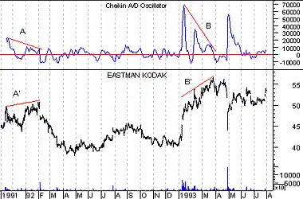

Inspired by the prior work of Joe Granville and Larry Williams, Marc Chaikin developed a new volume indicator, extending the work done by his predecessors. The Chaikin Oscillator is a moving average oscillator based on the Accumulation/Distribution indicator.
The following discussion of volume accumulation/distribution interpretation, written by Marc Chaikin, is reprinted here with his permission:
"Technical analysis of both market averages and individual stocks must include volume studies in order to give the technician a true picture of the internal dynamics of a given market. Volume analysis helps in identifying internal strengths and weaknesses that exist under the cover of price action. Very often, volume divergences versus price movement are the only clues to an important reversal that is about to take place. While volume has always been mentioned by technicians as important, little effective volume work was done until Joe Granville and Larry Williams began to look at volume versus price in the late 1960s in a more creative way.For many years it had been accepted that volume and price normally rose and fell together, but when this relationship changed, the price action should be examined for a possible change of trend. The Granville OBV concept which views the total volume on an up day as accumulation and the total volume on a down day as distribution is a decent one, but much too simplistic to be of value. The reason is that there are too many important tops and bottoms, both short-term and intermediate-term, where OBV confirms the price extreme. However, when an OBV line gives a divergence signal versus a price extreme, it can be a valuable technical signal and usually triggers a reversal in price.
Larry Williams took the OBV concept and improved on it. In order to determine whether there was accumulation or distribution in the market or an individual stock on a given day, Granville compared the closing price to the previous close, whereas Williams compared the closing price to the opening price. He [Williams] created a cumulative line by adding a percentage of total volume to the line if the close was higher than the opening and, subtracting a percentage of the total volume if the close was lower than its opening price. The accumulation/distribution line improved results dramatically over the classic OBV approach to volume divergences.
Williams then took this one step further in analyzing the Dow Jones Industrials by creating an oscillator of the accumulation/distribution line for even better buy and sell signals. In the early 1970s, however, the opening price for stocks was eliminated from the daily newspaper and Williams' formula became difficult to compute without many daily calls to a stockbroker with a quote machine. Because of this void, I created the Chaikin Oscillator substituting the average price of the day for Williams' opening and took the approach one step further by applying the oscillator to stocks and commodities. The Chaikin Oscillator is an excellent tool for generating buy and sell signals when its action is compared to price movement. I believe it is a significant improvement over the work that preceded it.
The premise behind my oscillator is three-fold. The first premise is that if a stock or market average closes above its midpoint for the day (as defined by [high + low] / 2), then there was accumulation on that day. The closer a stock or average closes to its high, the more accumulation there was. Conversely, if a stock closes below its midpoint for the day, there was distribution on that day. The closer a stock closes to its low, the more distribution there was.
The second premise is that a healthy advance is accompanied by rising volume and a strong volume accumulation. Since volume is the fuel that powers rallies, it follows that lagging volume on rallies is a sign of less fuel available to move stocks higher.
Conversely, declines are usually accompanied by low volume, but end with panic-like liquidation on the part of institutional investors. Thus, we look for a pickup in volume and then lower-lows on reduced volume with some accumulation before a valid bottom can develop.
The third premise is that by using the Chaikin Oscillator, you can monitor the flow of volume into and out of the market. Comparing this flow to price action can help identify tops and bottoms, both short-term and intermediate-term.
Since no technical approach works all the time, I suggest using the oscillator along with other technical indicators to avoid problems. I favor using a price envelope around a 21-day moving average and an overbought/oversold oscillator together with the Chaikin Oscillator for the best short and intermediate-term technical signals.
The most important signal generated by the Chaikin Oscillator occurs when prices reach a new high or new low for a swing, particularly at an overbought or oversold level, and the oscillator fails to exceed its previous extreme reading and then reverses direction.
- Signals in the direction of the intermediate-term trend are more reliable than those against the trend.
- A confirmed high or low does not imply any further price action in that direction. I view that as a non-event.
A second way to use the Chaikin Oscillator is to view a change of direction in the oscillator as a buy or sell signal, but only in the direction of the trend. For example, if we say that a stock that is above its 90-day moving average of price is in an uptrend, then an upturn of the oscillator while in negative territory would constitute a buy signal only if the stock were above its 90-day moving average--not below it.
A downturn of the oscillator while in positive territory (above zero) would be a sell signal if the stock were below its 90-day moving average of closing prices."
The following chart shows Eastman Kodak and the Chaikin Oscillator. Bearish divergences (where prices increased to new highs while the Oscillator was falling) occurred at points "A" and "B." These divergences were warnings of the sell-offs that followed.

The Chaikin Oscillator is created by subtracting a 10-period exponential moving average of the Accumulation/Distribution Line from a 3-period exponential moving average of the Accumulation/Distribution Line.